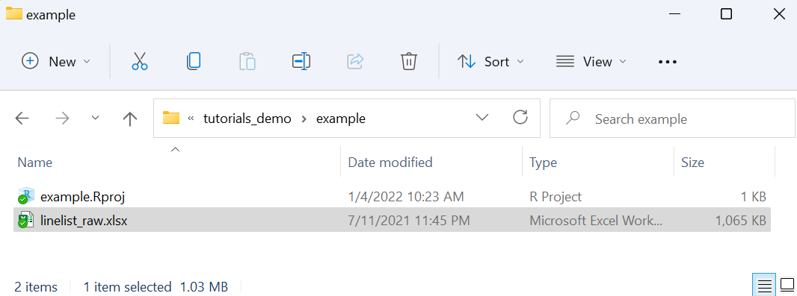

| ID: | Password: | ||||
|
|
|||||
Introduction to R for Applied Epidemiology and Public Health

Welcome
Welcome to the course “Introduction to R for applied epidemiologists”, offered for free by Applied Epi - a non-profit organisation that offers open-source tools, training, and support to frontline public health practitioners.
This interactive tutorial focuses on setting up R for the first time, an introduction to basic R coding, and how to import your dataset into R.
If you are already comfortable with the above skills, consider taking instead our tutorials for R in applied epidemiology, on [data cleaning], [data visualisation], or [tidy data best practices].
This tutorial draws from chapters of our free Epidemiologist R handbook such as R Basics and Import and Export. The Epi R Handbook has over 50 chapters, has helped over 110,000 people learn R, and is also available for offline use.
Target Audience
This course is designed with the following objectives:
- To be friendly to people who have never used a programming language before
- To teach R emphasizing examples, datasets, and challenges commonly faced by applied epidemiologists
- To be modular - so that you can skip to section most relevant to you
We expect that you know how to do … TO DO
Other languages
This course is available…
Offline / Online
You can access this tutorial offline by downloading our R package … If viewing offline, you can view the videos by doing …
Learning goals
In this tutorial you will:
- Become familiar with typing code “commands”
- “Importing” (loading) a dataset into R to conduct cleaning and other modifications
- View a dataset in R
- Review and access columns in a dataset
- Key operators and functions
- Piping and pipe operators
- Errors and warnings
Data consent
This tutorial is anonymously collecting your entries, for purposes of improvement… by continuing you consent to this collection and use.
Who made this course
This course is designed by Applied Epi … epidemiologists with decades of ground-level experience in outbreak response and local public health work.

Data used in this tutorial
In this tutorial we will use the following datasets. Please take a few minutes to review the structure and content of each dataset before continuing.
Use the arrows on the right to scroll through hidden columns. Note that these are “raw” (messy) datasets that mimic problems commonly found in real-life epidemiological datasets.
A “linelist” of cases in a fictional (not real) Ebola outbreak*
A “linelist” is a term used in applied epidemiology to refer to a table that contains key information about each case or suspect case in an outbreak. Each row represents one case, and the columns contain variables such as age, sex, date of symptom onset, outcomes, etc.
This dataset contains 6611 rows and 28 columns. Below are the first 5 rows:
Aggregated data from malaria surveillance in a fictional country
Aggregated data in epidemiology usually means a table of counts for each facility, or district, etc. Sometimes, the counts can also be per day, week, or month.
In this dataset, each facility reported daily case counts of rapid-test (RDT)-confirmed malaria. Thus, each row represents the number of cases for a specific facility on a specific day.
This dataset contains 3038 rows and 10 columns. Below are the first 5 rows:
Tidy Data
We highly recommend doing our tutorial on Tidy Data in Applied Epidemiology. Collecting, formatting, and preparing your dataset before importing it into R is a critical step!
LINK
VIDEO TEASER
Setup R and RStudio
Install R
R on a USB drive
Install RStudio
Working in an R project
Talk about R projects here…
SHORT VIDEO SUMMARISING TRIAD OF RPROJECTS/HERE/IMPORT
Create an R project

Review your R project
Now, we can see the new folder that we created (/example), and within this folder is a new “R project” file (example.Rproj).

**It is important that you conduct all your work and changes within the R project. When you sit down to begin working, remember to open the R project by opening the .Rproj file. This will open an RStudio window.
Opening your R project
**It is important that you conduct all your work and changes within the R project. When you sit down to begin working, remember to open the R project by opening the .Rproj file. This will open an RStudio window.
What is programming?
What does it mean that R is a statistical programming language?
Commands as instructions
Scripts are a list of instructions
Design of a typical script in public health
Header with objective, authors, contact info, date, etc. Load packages Load data Clean data Perform analyses Display results as plots, tables, maps, etc.
All of the above can be done all in R, and can be transformed into a report via R Markdown.
Reproducibility
(get quote or video from someone about how reproducibility helped them in collaboration)
Collaboration
(get quote or video from someone about how reproducibility helped them in collaboration)
Compare to Excel analysis
R has become more easy to learn
Tidyverse, Epi R Handbook, other materials
R functions
About R functions at very basic level.
import() or pload()
Install and Load R packages
PERHAPS WE JUST HAVE THEM RUN THIS CODE AND EXPLAIN IT LATER? NEED TO INTRODUCE FUNCTIONS FIRST, AND IMPORT() IS A GREAT FUNCTION TO TEACH THAT (BETTER THAN LIBRARY()). OR WE HAVE A FIRST SECTION THAT INTRODUCES FUNCTION LIKE sqrt() or age_pyramid() like in the handbook.
In order to practice basic R functions, we will use the linelist fictional ebola outbreak data set you met in the EpiRHandbook.
To use basic functions with public health data, the tidyverse metapackage is very useful. Tidyverse loads the dplyr, ggplot2, and other packages that are useful in epi data analysis.
We’ve preloaded the below packages for now. Installation and loading of these packages is described on the EpiRHandbook Suggested Packages page.
In this assignment we’ll work with 3 R packages, let’s load them!
___() # load the rio package
___() # load the here package
___() # load the tidyverse megapackagelibrary(rio)
library(here)
library(tidyverse)R packages
Recommended packages
See epirhandbook LINK for recommended packages
Masking and use of the :: operator
Importing data
Save your data in the R project
In order to import data into R, you must tell R where to access the dataset file on your computer (e.g. a specific folder, or on a shared drive).
This can be surprisingly difficult (e.g. data are stored on shared drives). However, by saving the data within our R project the whole process becomes much easier.
Below is a screenshot of our R project’s files, as viewed in a typical file explorer. See the dataset linelist_raw.xlsx that is saved in the same folder as the example.Rproj file. This is the “root” folder of the R project, meaning to access this folder from the R project file you do not need to click into any sub-directories (sub-folders).

2) Import data from the R project’s “root” folder
To import a dataset into R, we run a command. This command will use the function import().
import("linelist_raw.xlsx")If you run this command from RStudio (either in the R console, or from an R script), R will search in the root folder of the R project for the file linelist_raw.xlsx, and will print the dataset into your R console.
In the next step, we show a slight adjustment to this command that will save the dataset as an object in R, so that you can actually modify and analyse it.
IMAGE OF DATA IMPORTED BUT NOT SAVED
Saving an imported dataset as an R object
Most times, you import a dataset into R in order to modify, transform, and analyse it. To achieve this, we must modify the import() command slightly so that the dataset is saved as an R “object”.
linelist_raw <- import("linelist_raw.xlsx")IMAGE OF DATASET SAVED AS R OBJECT
As described in the EpiRHandbook, an object exists when you have assigned it a value (see the assignment section below). When it is assigned a value, the object appears in the Environment (see the upper right pane of RStudio). It can then be operated upon, manipulated, changed, and re-defined.
In applied epidemiology), you will most often encounter objects that are data frames and vectors. The data we are using is classified as a data frame.
The cleaned linelist data object would have the name of the file linelist_cleaned.xlsx unless assigned a different name.
We want to give the data a simpler name for easier recall, so we will use the <- operator to assign the object name linelist.
See below how the name linelist is assigned to the data brought in following the standard order:
object_name <- value (or process/calculation that produce a value)
Import data from a subfolder
Best practices suggest that you organise your R project with sub-folders. Typically, you will create a folder for “data”, in which you will store your datasets.
To import data from a sub-folder, the import() command should be modified so that it correctly tells R where to search for this file. This is done using the here() function.
linelist_raw <- import(here("data", "linelist_raw.xlsx")) # import data and save as named objectA more efficient approach for a quick check is to use the head() function to produce the first few rows of the data instead of the entire dataset.
Exercise 1
Now it’s your turn. Here’s a simple exercise with an empty code chunk provided for entering the answer.
Write the R code required to read in the original data object linelist_cleaned.rds and call it linelist.
linelist <- rio::import("data", "linelist_cleaned.rds")linelist <- import("linelist_cleaned.rds")"Use the function import() from the rio package, and put the full name of the file (including extension) in quotation marks"Now type code that will print the first 10 lines of data in the linelist data frame.
head(linelist)Object Classes
All the objects stored in R have a class which tells R how to handle the object. There are many possible classes. While working with epidemiology data sets, object classes will most likely vary the most within columns (or variables).
You can test the class of an object by providing its name to the function class().
Exercise 2
Enter and run the code to check the class of linelist.
class(linelist)Note: you can reference a specific column within a dataset using the $ notation to separate the name of the dataset and the name of the column. It’s good practice to do this while getting to know key columns in your data.
Now, enter the code to check the class of the outcome column in linelist.
class(linelist$outcome)While we’re at it, why don’t we check the class of the temp column?
class(linelist$temp)It’s likely at some point you will need to change the class of a column in your dataset, but we will go over that in a later lesson.
Indexing
You may need to view parts of objects, also called “indexing”, which is often done using the square brackets [ ]. Using $ on a dataframe to access a column is also a type of indexing, which you used in the previous exercise.
Using square brackets with the summary() function is one helpful way to use indexing. See below for examples from the handbook.
Let’s say we want a summary of ebola case temperatures from our data linelist:
## Min. 1st Qu. Median Mean 3rd Qu. Max. NA's
## 35.20 38.20 38.80 38.56 39.20 40.80 149If we just want to know what the maximum temperature of an ebola case from our data is:
## Max.
## 40.8It can also be done by the element title using double brackets:
## [1] 40.8Note: Character elements need to be entered with quotations
Exercise 3
You try. Enter the code to index the median case temperature from linelist.
summary(linelist$temp)[3]Hint: the median is the third element in the summary() output.
Once you’ve indexed the median ebola case temperature, enter the same line again below. Except this time use double brackets [[ ]] to index. Let’s see what changes in the output.
summary(linelist$temp)[[3]]Brackets also work on data frames to view specific rows and columns. You can do this using the syntax dataframe[rows, columns].
How would you index linelist to show the age, gender, and hospital columns of cases below the age of 18? Enter the code based on this criteria.
linelist[linelist$age < 18 , c("age", "gender", "hospital")]Piping
There are different ways of writing code. One popular methods of writing R code is using “pipes”… Epi R Handbook explanation.
Index with dplyr
In the handbook you saw dataframe indexing using the package dplyr and its functions: * filter() with the logical statement row_number()for rows, * select() for columns, and * head().
Fill in the blank with the correct code for filtering and indexing your data in the next exercises.
View the first two rows of linelist usinghead()
linelist ____ head(2)linelist %>% head(2)linelist ____ filter(____)linelist %>% filter(row_number == 100)linelist ____ filter(_____ %in% _____) %>% _____(date_onset, outcome, age)linelist %>% filter(row_number() %in% 15:25) %>% select(date_onset, outcome, age)Note: For indexing lists, refer back to the handbook for examples and resources. Remember that the linelist data you are working with is classified as a dataframe.
TEMPLATE Code
Exercise with Code
Here’s an exercise with some prepopulated code as well as exercise.lines = 5 to provide a bit more initial room to work.
Now write a function that adds any two numbers and then call it:
add <- function() {
}Topic 2
Exercise with Hint
Here’s an exercise where the chunk is pre-evaulated via the exercise.eval option (so the user can see the default output we’d like them to customize). We also add a “hint” to the correct solution via the chunk immediate below labeled print-limit-hint.
Modify the following code to limit the number of rows printed to 5:
mtcarshead(mtcars)Quiz
You can include any number of single or multiple choice questions as a quiz. Use the question function to define a question and the quiz function for grouping multiple questions together.
Some questions to verify that you understand the purposes of various base and recommended R packages: